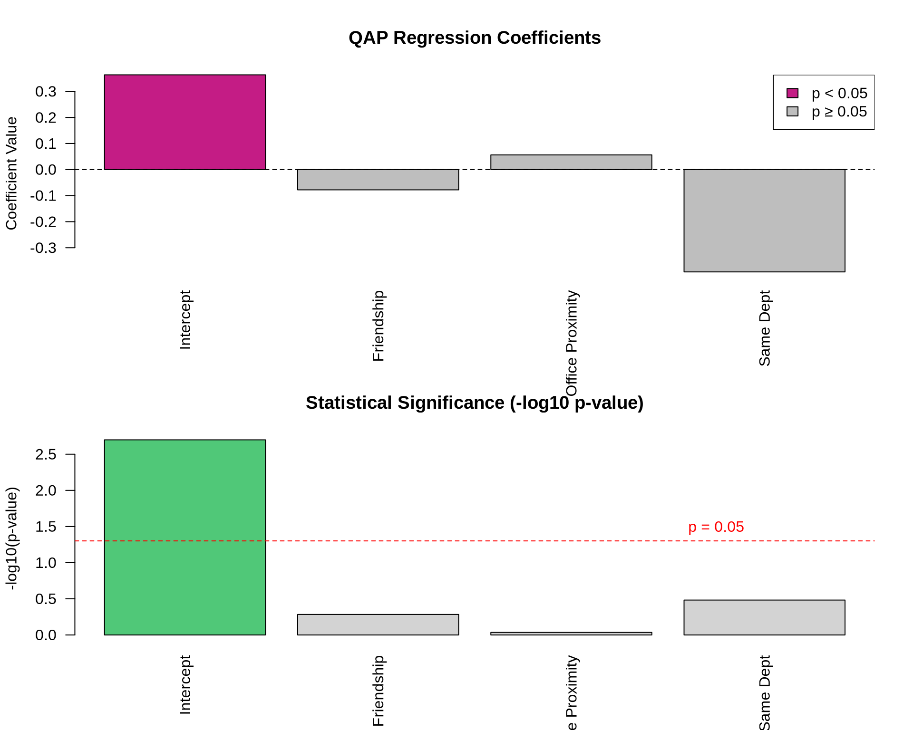

library(sna)
library(network)
set.seed(456) # for reproducibilityPractice Exercise: QAP Regression
Week 4 - Network Analytics
Exercise Overview
In this exercise, we’ll explore QAP (Quadratic Assignment Procedure) Regression, a method for testing relationships between network matrices while accounting for the dependency structure in network data. We’ll examine:
- QAP Correlation: Testing association between two networks
- QAP Regression: Predicting one network from multiple others
- Interpretation: Understanding results and significance tests
Setup
Load required packages:
Part 1: Creating Example Networks
Let’s create a scenario with employees in a small company. We’ll examine relationships between: - Advice network: Who seeks work advice from whom - Friendship network: Who considers whom a friend
- Office proximity: Physical distance between desks - Department: Same department membership
# Create 10 employees
n <- 10
employees <- paste0("Emp", 1:10)
# 1. Create advice network (who seeks advice from whom)
advice <- matrix(0, n, n)
rownames(advice) <- colnames(advice) <- employees
# Senior employees (1-3) give advice to juniors
advice[4:10, 1:3] <- rbinom(21, 1, 0.6)
# Some peer advice among juniors
advice[4:7, 8:10] <- rbinom(12, 1, 0.3)
advice[8:10, 4:7] <- rbinom(12, 1, 0.3)
diag(advice) <- 0 # no self-loops
# 2. Create friendship network (undirected)
friendship <- matrix(0, n, n)
rownames(friendship) <- colnames(friendship) <- employees
# Friends within similar levels
friendship[1:3, 1:3] <- rbinom(9, 1, 0.5)
friendship[4:7, 4:7] <- rbinom(16, 1, 0.4)
friendship[8:10, 8:10] <- rbinom(9, 1, 0.5)
# Some cross-level friendships
friendship[1:3, 4:7] <- rbinom(12, 1, 0.2)
friendship[4:7, 1:3] <- t(friendship[1:3, 4:7])
# Make symmetric and remove diagonal
friendship[lower.tri(friendship)] <- t(friendship)[lower.tri(friendship)]
diag(friendship) <- 0
# 3. Create office proximity (based on desk distance)
# Closer desks = higher values
office_dist <- matrix(0, n, n)
rownames(office_dist) <- colnames(office_dist) <- employees
# Create distance based on floor/section
for(i in 1:n) {
for(j in 1:n) {
if(i != j) {
# Same section (1-3, 4-7, 8-10)
if((i <= 3 & j <= 3) |
(i >= 4 & i <= 7 & j >= 4 & j <= 7) |
(i >= 8 & j >= 8)) {
office_dist[i,j] <- runif(1, 0.7, 1) # close proximity
} else {
office_dist[i,j] <- runif(1, 0, 0.3) # far proximity
}
}
}
}
# 4. Create department membership (same = 1, different = 0)
dept <- c(rep("Sales", 3), rep("Tech", 4), rep("Admin", 3))
same_dept <- matrix(0, n, n)
for(i in 1:n) {
for(j in 1:n) {
if(dept[i] == dept[j] & i != j) same_dept[i,j] <- 1
}
}
rownames(same_dept) <- colnames(same_dept) <- employeesPart 2: Visualizing Networks
Let’s visualize our networks to understand their structure:
par(mfrow = c(2, 2))
# Plot advice network
gplot(advice,
vertex.col = c(rep("#c41c85", 3), rep("#50C878", 4), rep("#4169E1", 3)),
vertex.cex = 2,
label = employees,
label.col = "white",
label.cex = 0.7,
edge.col = "#D3D3D3",
main = "Advice Network",
sub = "(Pink: Senior, Green: Tech, Blue: Admin)")
# Plot friendship network
gplot(friendship,
vertex.col = c(rep("#c41c85", 3), rep("#50C878", 4), rep("#4169E1", 3)),
vertex.cex = 2,
label = employees,
label.col = "white",
label.cex = 0.7,
edge.col = "#D3D3D3",
main = "Friendship Network",
mode = "fruchtermanreingold")
# Plot office proximity
gplot(office_dist,
vertex.col = c(rep("#c41c85", 3), rep("#50C878", 4), rep("#4169E1", 3)),
vertex.cex = 2,
label = employees,
label.col = "white",
label.cex = 0.7,
edge.col = gray(1 - office_dist),
edge.lwd = office_dist * 3,
main = "Office Proximity",
sub = "(Darker/thicker = closer desks)")
# Plot department membership
gplot(same_dept,
vertex.col = c(rep("#c41c85", 3), rep("#50C878", 4), rep("#4169E1", 3)),
vertex.cex = 2,
label = employees,
label.col = "white",
label.cex = 0.7,
edge.col = "#D3D3D3",
main = "Same Department")
Part 3: QAP Correlation
Test pairwise correlations between networks using QAP:
# Test correlation between advice and friendship
qap_advice_friend <- qaptest(list(advice, friendship),
gcor,
g1 = 1, g2 = 2,
reps = 1000)
cat("QAP Correlation: Advice ~ Friendship\n")QAP Correlation: Advice ~ Friendshipcat("Observed correlation:", round(qap_advice_friend$testval, 3), "\n")Observed correlation: -0.12 cat("P-value:", round(qap_advice_friend$pgreq, 3), "\n\n")P-value: 0.937 # Visualize QAP test
hist(qap_advice_friend$dist,
breaks = 30,
main = "QAP Test: Advice ~ Friendship",
xlab = "Correlation",
col = "lightgray")
abline(v = qap_advice_friend$testval, col = "red", lwd = 2)
text(qap_advice_friend$testval, max(table(cut(qap_advice_friend$dist, 30))),
"Observed", col = "red", pos = 4)
# Test all pairwise correlations
networks <- list(advice, friendship, office_dist, same_dept)
net_names <- c("Advice", "Friendship", "Office", "SameDept")
# Create correlation matrix
qap_cors <- matrix(NA, 4, 4)
qap_pvals <- matrix(NA, 4, 4)
for(i in 1:4) {
for(j in 1:4) {
if(i != j) {
qap_result <- qaptest(networks, gcor, g1 = i, g2 = j, reps = 500)
qap_cors[i,j] <- qap_result$testval
qap_pvals[i,j] <- qap_result$pgreq
}
}
}
# Display results
colnames(qap_cors) <- rownames(qap_cors) <- net_names
colnames(qap_pvals) <- rownames(qap_pvals) <- net_names
cat("\nQAP Correlation Matrix:\n")
QAP Correlation Matrix:print(round(qap_cors, 3)) Advice Friendship Office SameDept
Advice NA -0.120 -0.346 -0.364
Friendship -0.120 NA 0.132 0.157
Office -0.346 0.132 NA 0.963
SameDept -0.364 0.157 0.963 NAcat("\nQAP P-values:\n")
QAP P-values:print(round(qap_pvals, 3)) Advice Friendship Office SameDept
Advice NA 0.936 1.000 1.000
Friendship 0.940 NA 0.228 0.294
Office 0.998 0.226 NA 0.000
SameDept 1.000 0.276 0.002 NAPart 4: QAP Regression
Now let’s predict advice-seeking from friendship, office proximity, and department:
# Prepare matrices for regression
y <- advice
X <- array(dim = c(3, n, n))
X[1,,] <- friendship
X[2,,] <- office_dist
X[3,,] <- same_dept
# Run QAP regression with OLS
qap_ols <- netlm(y, X,
mode = "digraph",
nullhyp = "qap",
reps = 1000)
# Display results
cat("QAP Regression Results: Advice Network\n")QAP Regression Results: Advice Networkcat("=====================================\n")=====================================summary(qap_ols)
OLS Network Model
Residuals:
0% 25% 50% 75% 100%
-0.38036458 -0.37118013 -0.02597158 0.61973275 0.70609565
Coefficients:
Estimate Pr(<=b) Pr(>=b) Pr(>=|b|)
(intercept) 0.36359484 0.998 0.002 0.002
x1 -0.07784050 0.269 0.731 0.520
x2 0.05628842 0.515 0.485 0.922
x3 -0.39280897 0.166 0.834 0.329
Residual standard error: 0.4204 on 86 degrees of freedom
Multiple R-squared: 0.1364 Adjusted R-squared: 0.1063
F-statistic: 4.529 on 3 and 86 degrees of freedom, p-value: 0.005367
Test Diagnostics:
Null Hypothesis: qap
Replications: 1000
Coefficient Distribution Summary:
(intercept) x1 x2 x3
Min -2.554932 -2.755432 -3.543105 -2.941607
1stQ -0.011421 -0.682755 -0.642629 -0.720567
Median 0.647864 -0.056711 0.062208 -0.026336
Mean 0.651294 -0.022526 0.035152 0.006521
3rdQ 1.339457 0.629649 0.747231 0.724377
Max 4.194518 3.752002 3.602831 4.011717Part 5: Visualizing Regression Results
# Extract coefficients and create bar plot
coef_names <- c("Intercept", "Friendship", "Office Proximity", "Same Dept")
coef_vals <- qap_ols$coefficients
coef_pvals <- qap_ols$pgreqabs
# Create coefficient plot
par(mfrow = c(2, 1))
# Coefficient values
barplot(coef_vals,
names.arg = coef_names,
col = ifelse(coef_pvals < 0.05, "#c41c85", "gray"),
main = "QAP Regression Coefficients",
ylab = "Coefficient Value",
las = 2)
abline(h = 0, lty = 2)
legend("topright",
legend = c("p < 0.05", "p ≥ 0.05"),
fill = c("#c41c85", "gray"))
# P-values
barplot(-log10(coef_pvals),
names.arg = coef_names,
col = ifelse(coef_pvals < 0.05, "#50C878", "lightgray"),
main = "Statistical Significance (-log10 p-value)",
ylab = "-log10(p-value)",
las = 2)
abline(h = -log10(0.05), lty = 2, col = "red")
text(4, -log10(0.05), "p = 0.05", col = "red", pos = 3)
Part 6: Model Diagnostics
# Calculate fitted values and residuals
fitted_vals <- qap_ols$fitted.values
residuals <- qap_ols$residuals
# Residual plots
par(mfrow = c(1, 2))
# Histogram of residuals
hist(residuals,
breaks = 30,
main = "Distribution of Residuals",
xlab = "Residuals",
col = "lightblue")
# Fitted vs residuals
plot(fitted_vals, residuals,
main = "Fitted vs Residuals",
xlab = "Fitted Values",
ylab = "Residuals",
pch = 19,
col = rgb(0, 0, 0, 0.5))
abline(h = 0, col = "red", lty = 2)
Your Turn
Try these exercises:
# Exercise 1: Create and test a hypothesis
# Do people seek advice more from those in their department who are also friends?
# Hint: Create an interaction term
# Your code here
# Exercise 2: Reverse the analysis
# Predict friendship from advice-seeking, proximity, and department
# Your code here
# Exercise 3: Add a new predictor
# Create a "seniority difference" matrix and add it to the model
# Your code hereKey Concepts
- QAP preserves network structure during permutation tests
- Network autocorrelation makes standard tests invalid
- Multiple regression with QAP allows complex hypotheses
- Effect sizes matter as much as significance